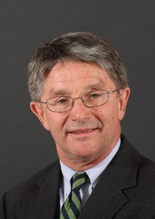

Focus IP Group is a consultancy practice established by Dr. Ashley Stevens in 2011 to provide education and strategic consulting services in technology transfer and the commercialization of early stage technologies, and support in intellectual property legal disputes.

Dr. Stevens has worked in the entrepreneurial world since 1982, when he joined one of the first generation biotechnology companies, BioTechnica International, Inc. in Cambridge, MA.
He subsequently co-founded two biotechnology companies:
Genmap, Inc., the first company founded to work on the human genome, out of which emerged Myriad Genetics, Inc. and
Kytogenics, Inc. a company that developed novel medical products based on modified chitosans.
All three of these companies took academic technologies on their first steps into the marketplace and in 1991, he moved one step up the value chain and entered the then fledgling world of technology transfer. From 1991 to 1995, he was Director of Technology Transfer at the Dana-Farber Cancer Center, a teaching affiliate of the Harvard Medical Center and one of the US’ Comprehensive Cancer Centers.
In 1995, he moved to Boston University, where, until 2007, he was Director of the Office of Technology Transfer in the Community Technology Fund (which became the Office of Technology Development in 2005) and subsequently was Executive Director, Technology Transfer until his retirement in July 2011. Under his leadership, some 55 new companies were spun out of BU. For ten years he held an adjunct appointment in BU’s Questrom School of Management, where he taught two graduate level courses on the commercialization of early stage technologies, “Bench-to-Bedside” and Technology Entrepreneurship and Commercialization.
Each summer he is a Guest Professor at Osaka University, Japan, where he teaches a technology commercialization course called G-TEC and he was previously an Adjunct Principal Investigator at the National University of Singapore (NUS) Suzhou Research Institute.
Since retiring from Boston University, he has chaired the Patent Committee of the Forsyth Institute, a leading research institute focused on oral health.
He was President of AUTM (formerly the Association of University Technology Managers) in 2010 / 11 and received AUTM’s Bayh-Dole Award in 2007 (from the hands of Senator Bayh himself!)
He is both a Certified Licensing Professional (“CLP”) and a Registered Technology Transfer Professional (“RTTP”).